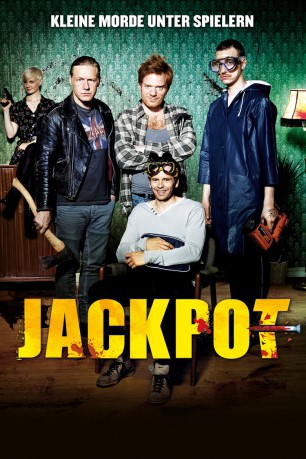

#4822 Jackpot - Vier Nieten landen einen Treffer
 
 IMDB-Wertung: 6.6 / 10
IMDB-Wertung: 6.6 / 10  Metascore: 0
Metascore: 0 
An der Grenze zwischen Norwegen und Schweden leben vier schräge Vögel: Oscar, Thor, Billy und Tresko. Bis auf Oscar allesamt Ex-Knackis, die in einer Fabrik mitten im Nirgendwo arbeiten, in der Plastikweihnachtsbäume hergestellt werden. Doch sie sind auch Spieler. Haben aber noch nie viel gewonnen – bis jetzt. Schnell lösen sich Vertrauen und Freundschaft auf, werden Waffen geladen, Messer geschärft, und die Aufteilung des Geldes und der Gliedmaßen beginnt ...
Jahr: 2011
Dauer: 85 Minuten
FSK: 16
Land: Norwegen Studio: NFP DistributionTonspuren:
Untertitel: Deutsch,
Auflösung: 1080p (1920x800) Größe: 3983 MB
Genre: Action, Komödie, Krimi
Regisseur: Magnus Martens
Drehbuch: Simon Verhoeven
Soundtrack:
Darsteller:
- Lena Kristin Ellingsen als Trine
 Fridtjov Såheim als Gjedde
Fridtjov Såheim als Gjedde Peter Andersson als Lasse
Peter Andersson als Lasse- Ina Kosik als Stripper 1
 Kyrre Hellum als Oscar
Kyrre Hellum als Oscar- Mads Ousdal als Thor
- Henrik Mestad als Solør
 Arthur Berning als Billy
Arthur Berning als Billy- Andreas Cappelen als Tresko
- Jan Grønli als Clausen
- Marie Blokhus als Gina
- Anne Marie Ottersen als Thors mamma
- Fredrik Petersson als Gøran
- Isidor Alcaide Backlund als Lasses sønn
- Laban Eliasson als Svensk politi 1
- Margaretha Noole als Svensk politi 2
- Karolina Johansson als Bondekone
- Niklas Brennsund als Norsk gutt 1
- Jan Karnå als Norsk gutt 2
- Daniel Lindman als Norsk gutt 3
- Frank Skovrand als Toller
- Samira Moon Lee als Stripper 2
Datei: X:\2011(G-M)\Jackpot - Vier Nieten landen einen Treffer (2011, FSK16, 1920x800).mkv seit 21.11.2016
Festplatte: HD 2011(G-Z)
 Es gibt insgesamt 100 Filme in der Gruppe '2011(G-M)'
Es gibt insgesamt 100 Filme in der Gruppe '2011(G-M)'